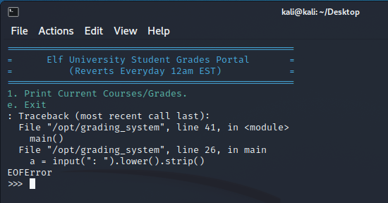
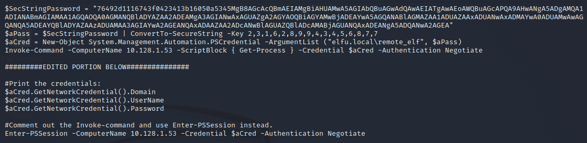
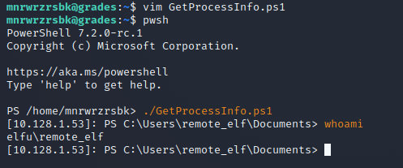

Fail2Ban is a type of Host Intrusion Prevention System that analyzes log files or network traffic and compares that to filters to determine if the source IP should be blocked based on behavior. There are several directories with which we concern ourselves regarding Fail2Ban.
The filter contains a regular expression which matches the information you are trying to filter on. Such as failed login attempts or unsuccessful connection attempts for example.
The jail is the criteria which, when matched, will execute the action. The action contains information regarding the number of failed attempts or timeframe in which the attempts are seen. When these criteria are met, the action is executed.
The action is basically any command you want to run when your criteria is met. For example, 10 failed logons in 1 minute. When anyone meets that criteria, the action is executed. It could be anything from using IPtables to block the IP, to shipping the information to a SIEM for further analysis, or any combination of other things.
These are the config files I used for this challenge and their locations. Once you're done populating the files with the appropriate contents, run
before = common.conf
[Definition]
failregex = <HOST> sent a malformed request$
Invalid heartbeat .+ from <HOST>$
[Ll]ogin from <HOST> rejected due to unknown user name$
Failed login from <HOST> for .+$
logpath = /var/log/hohono.log
filter = xmas
enabled = true
maxretry = 10
findtime = 60m
action = xmas
actionstart = /root/naughtylist refresh
actionban = /root/naughtylist add <ip>
actionunban = /root/naughtylist del <ip>
When you are done with this challenge, be sure to speak with the elf named Eve Snowshoes to get all the hints for this next challenge in the same area.
Register for an ElfU account on the ElfU Portal.
After registering on the website, you will get a username and password issued. The username and password here in the walkthrough may not match, because it resets periodically.
With those credentials you just obtained, SSH into that machine to figure out what is next. Upon logging in to the machine, you're greeted with a jail. You need to break out of this jail to actually start doing anything in the challenge.
After mashing the keyboard for a while, you might happen upon a specific combination of keys. Specifically,

From this Python interpreter, we need to figure out how to get a bash shell. That way we don't have to break out of the jail every time and we can securecopy files back and forth without encountering errors. Just use Python to jump into a normal shell and then change your user shell to bash. Remember to reload your environment or just log out and back in to see the changes.
One of the elves gives you a hint about there being a 10.x.x.x network somewhere. Look in your routing table for those networks and scan them for services. The -O scan requires elevated privliges so it won't work.
Try the following scan:
There are two machines we are interested in. First, the domain controller at 10.128.1.53. Second, the shares we want to access on 10.128.3.30.
As long as we're scanning, we may as well enumerate the shares on the acquired target host with an nmap script meant specifically for such a task. The shares we are targeting are located here.
Overall, what we're trying to do is target the
With this hash, we can start cracking but to make that a lot less painful on your graphics card, we need some words to use in our wordlist. The rules I used are here in the OneRuleToRuleThemAll.rule. One of the elves gives you this as a hint for this challenge. Check out the registration website comments in the HTML code for some words to use.
Add those words to your list, download the rules from the GitHub website and break out hashcat. You may need to install the Nvidia CUDA Toolkit in order to utilize hashcat. Being the year 2021, it was difficult to find a CUDA Toolkit for an RTX 5090. When you're done, go mine some Dogecoin, Ethereum, or whatever other fly-by-night-Ponzi-scheme-coin you like.
Crack the hash and get the "Snow2021!" password for the service account elfu_svc. With that information, you can now access shares. In the previous images of share enumeration, we can see a share named
Eventually, you find the file

Here is the network layout from what we've just discovered.
Edit the script, launch PowerShell, run the script you edited, you're on the domain controller.

Check out the Research Department and see which Active Directory rights you have regarding the group. With the
With the ability to give anyone access, go ahead and give your launch platform access. Be sure to change the username and password appropriately. Put it into the scriptblock and run it.
Once the script executes successfully, log into your newly accessible share. Download the secret PDF with the ingredients in it for the challenge answer. Use SCP to get it back to your host.
Once you transfer the document, open it up and check out what the ingredients are.
Enter the ingredient to earn your Kudo Point which you can spend at any store that accepts that form of payment.
(No stores accept those)